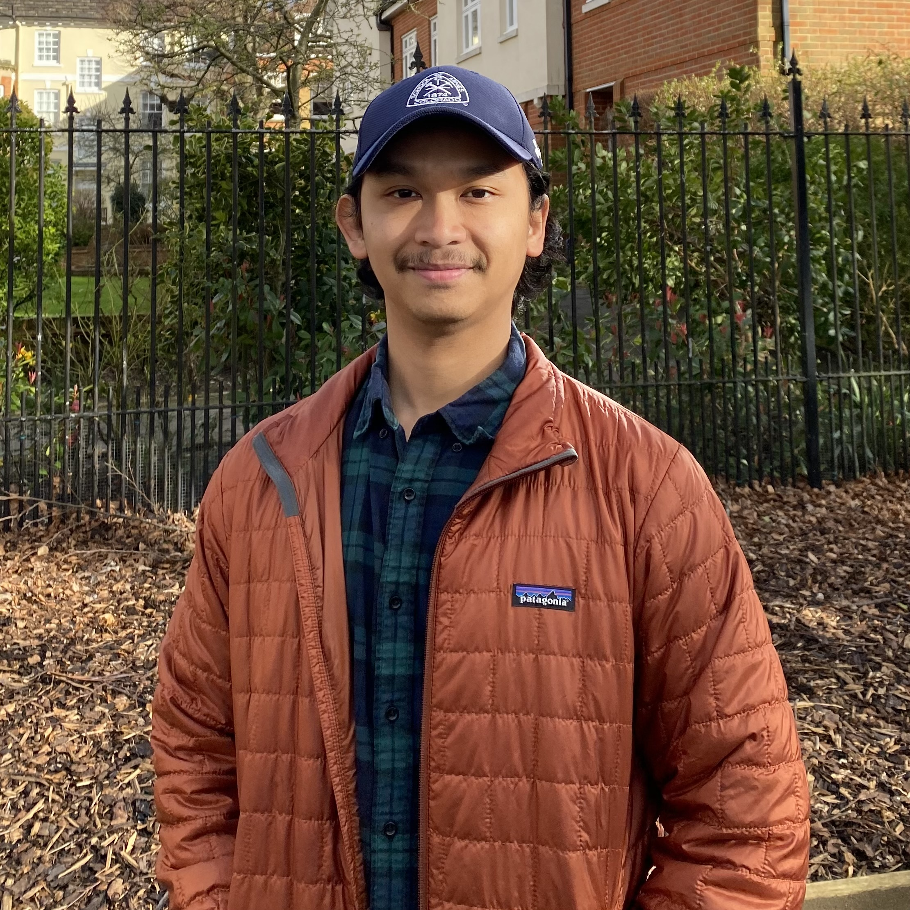
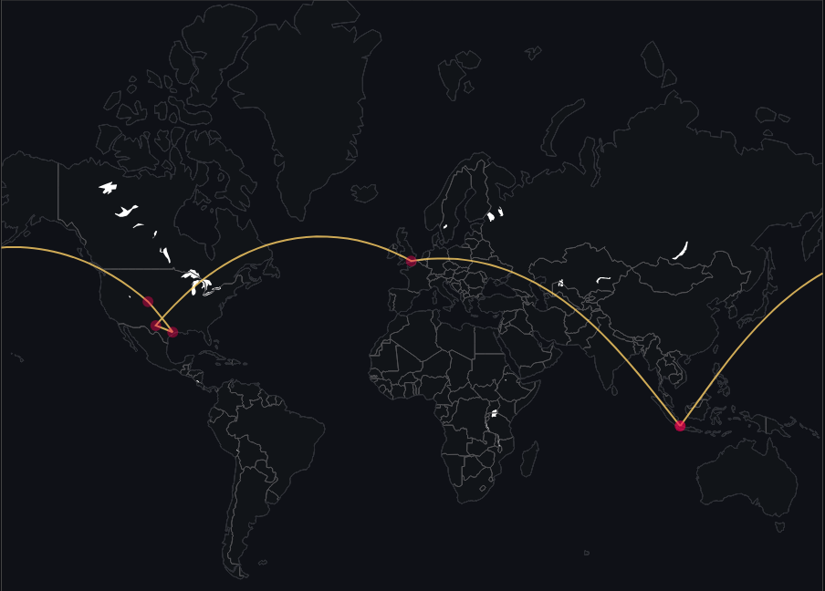

Aditya Pradono
Hello! I'm a Data Scientist with a background in geoscience and data analytics.
I like solving modern problems with data and business insights.

About
I've worked with various industries like technology, manufacturing, and energy and natural resources.
Projects
All repositories on GitHub-
Geospatial Open on GitHub
Satellite change detection
Detects land-surface change at an open-pit mine from two Sentinel-2 satellite images.
-
Computer vision Open on GitHub
Surfer detection
Computer vision that detects surfers in photos and video using YOLO.
-
LLM Open on GitHub
Food recipe recommender
Recommends recipes from the ingredients you have at home using an LLM.
-
Machine learning Open on GitHub
Machine fault prediction
Predicts machine faults from sensor data using various machine learning methods.
-
Energy Open on GitHub
North Dakota oil and gas production
Exploratory data analysis of oil and gas production in North Dakota.
-
Natural resources Open on GitHub
Global lithium reserves
Lithium distribution worldwide, from web scraping to data visualization.
-
Natural resources Open on GitHub
US helium concentrations
Interactive data visualization of helium concentrations in the US.
-
Geoscience Open on GitHub
Scanned PDF extraction
Table detection and text extraction from scanned PDFs using OCR.
-
Geospatial Open on GitHub
National parks of Indonesia
Web scraping and exploratory data analysis of national parks in Indonesia.
-
Data analytics Open on GitHub
PADI scuba diving
Scuba diving site analytics across Southeast Asia.
-
Machine learning Open on GitHub
FIFA clusters
Unsupervised machine learning of FIFA 21 video game players.
-
NLP Open on GitHub
YouTube sentiment
Sentiment analysis of comments on a YouTube video.
Geography
Some places that life has taken me to, all for growth.
